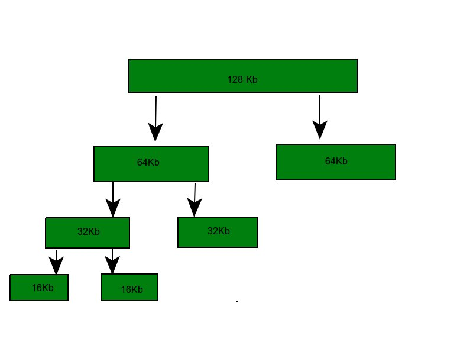
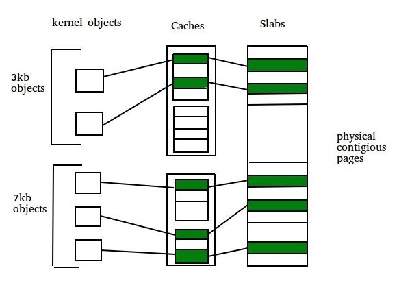

Prerequisite – Buddy System
Two strategies for managing free memory that is assigned to kernel processes:
1. Buddy system –
Buddy allocation system is an algorithm in which a larger memory block is divided into small parts to satisfy the request. This algorithm is used to give best fit. The two smaller parts of block are of equal size and called as buddies. In the same manner one of the two buddies will further divide into smaller parts until the request is fulfilled. Benefit of this technique is that the two buddies can combine to form the block of larger size according to the memory request.
Example – If the request of 25Kb is made then block of size 32Kb is allocated.

Four Types of Buddy System –
- Binary buddy system
- Fibonacci buddy system
- Weighted buddy system
- Tertiary buddy system
Why buddy system?
If the partition size and procees size are different then poor match occurs and may use space inefficiently.
It is easy to implement and efficient then dynamic allocation.
Binary buddy system –
The buddy system maintains a list of the free blocks of each size (called a free list), so that it is easy to find ablock of the desired size, if one is available. If no block of the requested size is available, Allocate searches for the first nonempty list for blocks of atleast the size requested. In either case, a block is removed from the free list.
Example – Assume the size of memory segment is initially 256kb and the kernel rquests 25kb of memory. The segment is initially divided into two buddies. Let we call A1 and A2 each 128kb in size. One of these buddies is further divided into two 64kb buddies let say B1 and B2. But the next highest power of 25kb is 32kb so, either B1 or B2 is further divided into two 32kb buddies(C1 and C2) and finally one of these buddies is used to satisfy the 25kb request. A split block can only be merged with its unique buddy block, which then reforms the larger block they were split from.
Fibonacci buddy system –
This is the system in which blocks are divided into sizes which are fibonacci numbers. It satisfy the following relation:
Zi = Z(i-1)+Z(i-2)
0, 1, 1, 2, 3, 5, 8, 13, 21, 34, 55, 144, 233, 377, 610. The address calculation for the binary and weighted buddy systems is straight forward, but the original procedure for the Fibonacci buddy system was either limited to a small, fixed number of block sizes or a time consuming computation.
Advantages –
- In comparison to other simpler techniques such as dynamic allocation, the buddy memory system has little external fragmentation.
- The buddy memory allocation system is implemented with the use of a binary tree to represent used or unused split memory blocks.
- The buddy system is very fast to allocate or deallocate memory.
- In buddy systems, the cost to allocate and free a block of memory is low compared to that of best-fit or first-fit algorithms.
- Other advantage is coalescing.
- Address calculation is easy.
What is coalescing?
It is defined as how quickly adjacent buddies can be combined to form larger segments this is known as coalescing.
For example, when the kernel releases the C1 unit it was allocated, the system can coalesce C1 and C2 into a 64kb segment. This segment B1 can in turn be coalesced with its buddy B2 to form a 128kb segment. Ultimately we can end up with the original 256kb segment.
Drawback –
The main drawback in buddy system is internal fragmentation as larger block of memory is acquired then required. For example if a 36 kb request is made then it can only be satisfied by 64 kb segment and reamining memory is wasted.
2. Slab Allocation –
A second strategy for allocating kernel memory is known as slab allocation. It eliminates fragmentation caused by allocations and deallocations. This method is used to retain allocated memory that contains a data object of a certain type for reuse upon subsequent allocations of objects of the same type. In slab allocation memory chunks suitable to fit data objects of certain type or size are preallocated. Cache does not free the space immediately after use although it keeps track of data which are required frequently so that whenever request is made the data will reach very fast. Two terms required are:
- Slab – A slab is made up of one or more physically contiguous pages. The slab is the actual container of data associated with objects of the specific kind of the containing cache.
- Cache – Cache represents a small amount of very fast memory. A cache consists of one or more slabs. There is a single cache for each unique kernel data structure.

Example –
- A separate cache for a data structure representing processes descriptors
- Separate cache for file objects
- Separate cache for semaphores etc.
Each cache is populated with objects that are instantiations of the kernel data structure the cache represents. For example the cache representing semaphores stores instances of semaphore objects, the cache representing process descriptors stores instances of process descriptor objects.
Implementation –
The slab allocation algorithm uses caches to store kernel objects. When a cache is created a number of objects which are initially marked as free are allocated to the cache. The number of objects in the cache depends on size of the associated slab.
Example – A 12 kb slab (made up of three contiguous 4 kb pages) could store six 2 kb objects. Initially all objects in the cache are marked as free. When a new object for a kernel data structure is needed, the allocator can assign any free object from the cache to satisfy the request. The object assigned from the cache is marked as used.
In linux, a slab may in one of three possible states:
- Full – All objects in the slab are marked as used
- Empty – All objects in the slab are marked as free
- Partial – The slab consists of both
The slab allocator first attempts to satisfy the request with a free object in a partial slab. If none exists, a free object is assigned from an empty slab. If no empty slabs are available, a new slab is allocated from contiguous physical pages and assigned to a cache.
Benefits of slab allocator –
- No memory is wasted due to fragmentation because each unique kernel data structure has an associated cache.
- Memory request can be satisfied quickly.
- The slab allocating scheme is particularly effective for managing when objects are frequently allocated or deallocated. The act of allocating and releasing memory can be a time consuming process. However, objects are created in advance and thus can be quickly allocated from the cache. When the kernel has finished with an object and releases it, it is marked as free and return to its cache, thus making it immediately available for subsequent request from the kernel.